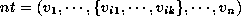
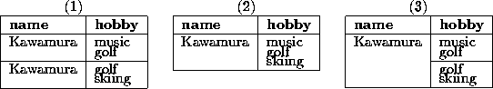
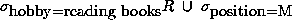
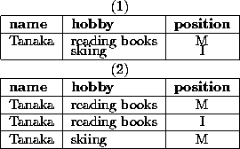

Intuitively, Kappa's sematic gives a flat expansion of a repetition. In other words when a nested relation NR has a tuple of

,also has the same meaning. The operation of expanding a repetition to a flat expression is called unnest and nest vice versa. Using this vocaburary, Kappa's semantic is stated as follows.
The semantic of the nested relation in Kappa does not change by either nest or unnest operation.
For example, the semantic of nested relational table5 is the same as that of table3. This is why Kappa returns the same reply to a query to both tables. The nested relation in Kappa is in this sense a natural extension of the relational model and efficient in both processing and expression.
Kappa's semantic is not necessarily the same as other nested
relational models. Let's see how different replies are returned to a
query in some different semantics of nested relation. Take table
6(1) as an example. If table6(1) is nested, we
will get table6(2) in Kappa and Verso developed in INRIA,
however in DASDBS and AIP-P in which
NF are used, we will get table6(3) instead.
are used, we will get table6(3) instead.

Take table7(1) as the next example, which is a very simple nested relation(R). After an operation of

, we will get table7(2) in Kappa, however in Verso, we will get the original table7(1). In table7(2) the relationship between "skiing" and "I" is omitted.

This example shows that it is very important to understand the semantics of nested relational models.